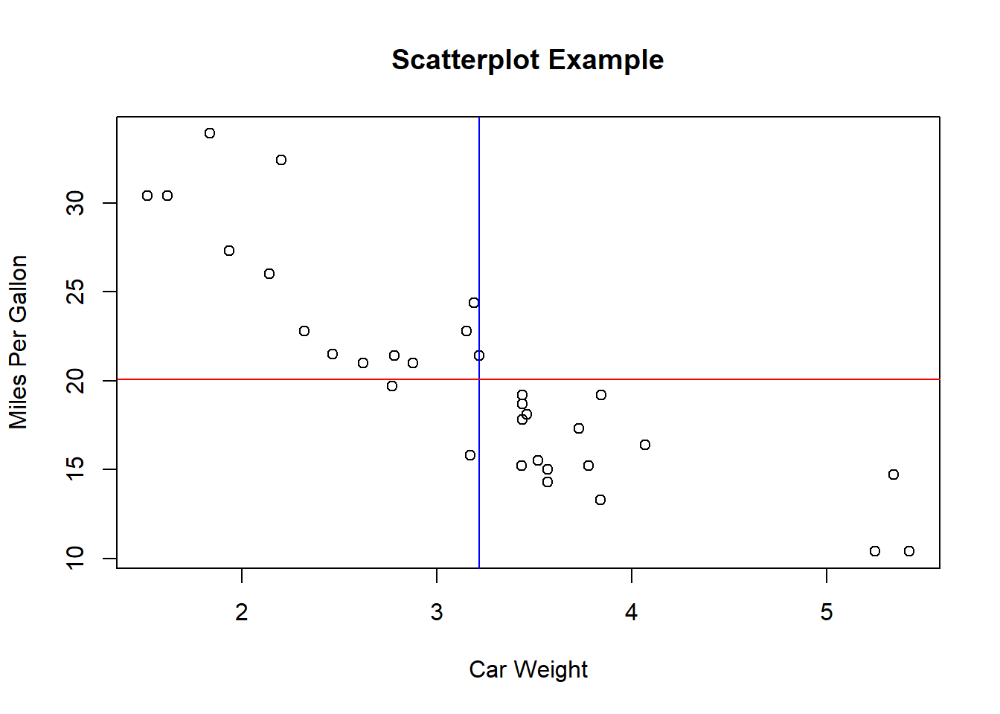

Direction of the scatterplot is important. “Downward” is negative (see example below), upward is positive, messy = no clear correlation, flat line = no impact.
The “response” variable is on the y-axis. The “explanatory/predictor” is on the x-axis. When using time data, the time is usually put on the x-axis, with the time being the “predictor” for the values on the y-axis.
Curved scatterplots suggest that you might have two different groups in the data, one with a positive correlation and one with a negative correlation.
In the example below, the data is divided by the mean lines. Top-left and bottom-right corners have a negative relation to the mean. Top-right and bottom-left corners have a positive relation to the mean. As you can see, there are only one or two data points clearly in a positive quadrants, the rest all fall into the negative relationship.
# Simple Scatterplot
attach(mtcars)## The following object is masked from package:ggplot2:
##
## mpgplot(wt, mpg, main="Scatterplot Example",
xlab="Car Weight", ylab="Miles Per Gallon")
mpgMean = mean(mtcars$mpg)
wtMean = mean(mtcars$wt)
abline(v=wtMean, col="blue")
abline(h=mpgMean, col="red")
Why? Because in the bottom-left quadrant all the scores are both less than the mean y axis AND less than the mean x axis, so the sum of xy will be positive. However, in top left and bottom right, there is one “positive” number (greater than one axis mean) and one “negative” number (less than one of the axis means) so the sum of the those xy data points will always be negative.
The plot can be standardised by converting all the data points to z-scores i.e. recalculated around a mean of zero.
Correlation coefficient is normally called “r” and is calculated as follows:
$ r = $
Or
$ r = $
The bottom line being the same as saying (n-1) multipled by standard deviation of x and standard deviation of y.
Correlation calculations can only be made on data that is straight or nearly straight.
Measures all the slopes between two possible points, assigns them as negative, positive or no slope. Once this has been done, take the difference between positive and negative slopes, and divide by number of slopes. This will result in a number between minus 1 and 1.
Spearman’s approach was to turn all the data points in ranks instead of them having their actual values. This helps to reduce impact of outliers. Spearman’s rho is the correlation of these rank values rather than the values themselves.
Both these approaches are “nonparametric” as they measure the association without having to be tied to a parameter or model.
Obviously.
Correlation tables are a way of presenting data with multiple variables to help find which pairs of variables seem to have strongest relationship.
Here is an example:
cor(mtcars)## mpg cyl disp hp drat wt
## mpg 1.0000000 -0.8521620 -0.8475514 -0.7761684 0.68117191 -0.8676594
## cyl -0.8521620 1.0000000 0.9020329 0.8324475 -0.69993811 0.7824958
## disp -0.8475514 0.9020329 1.0000000 0.7909486 -0.71021393 0.8879799
## hp -0.7761684 0.8324475 0.7909486 1.0000000 -0.44875912 0.6587479
## drat 0.6811719 -0.6999381 -0.7102139 -0.4487591 1.00000000 -0.7124406
## wt -0.8676594 0.7824958 0.8879799 0.6587479 -0.71244065 1.0000000
## qsec 0.4186840 -0.5912421 -0.4336979 -0.7082234 0.09120476 -0.1747159
## vs 0.6640389 -0.8108118 -0.7104159 -0.7230967 0.44027846 -0.5549157
## am 0.5998324 -0.5226070 -0.5912270 -0.2432043 0.71271113 -0.6924953
## gear 0.4802848 -0.4926866 -0.5555692 -0.1257043 0.69961013 -0.5832870
## carb -0.5509251 0.5269883 0.3949769 0.7498125 -0.09078980 0.4276059
## qsec vs am gear carb
## mpg 0.41868403 0.6640389 0.59983243 0.4802848 -0.55092507
## cyl -0.59124207 -0.8108118 -0.52260705 -0.4926866 0.52698829
## disp -0.43369788 -0.7104159 -0.59122704 -0.5555692 0.39497686
## hp -0.70822339 -0.7230967 -0.24320426 -0.1257043 0.74981247
## drat 0.09120476 0.4402785 0.71271113 0.6996101 -0.09078980
## wt -0.17471588 -0.5549157 -0.69249526 -0.5832870 0.42760594
## qsec 1.00000000 0.7445354 -0.22986086 -0.2126822 -0.65624923
## vs 0.74453544 1.0000000 0.16834512 0.2060233 -0.56960714
## am -0.22986086 0.1683451 1.00000000 0.7940588 0.05753435
## gear -0.21268223 0.2060233 0.79405876 1.0000000 0.27407284
## carb -0.65624923 -0.5696071 0.05753435 0.2740728 1.00000000Re-expressing the data can help identify correlation. For example, you may have a relation i.e. as one variable gets larger, so does the other, but it might not do so in a linear way.
A logarithm can be run on the data to help to straighten it out.
The “ladder of powers” presents the application of a different “power” to the data to try to straighten out data.
For example, power of y2 (square) is good for unimodal data that is skewed to left or scatterplot that bends down.